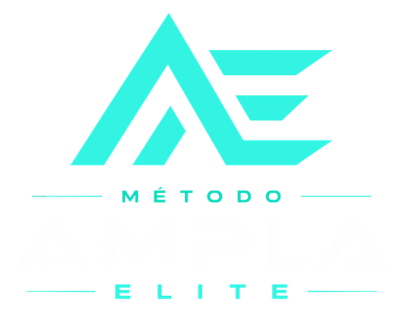

Proposta comercial · Método Ampla Elite
Sistema completo de crescimento de clínicas
Do posicionamento estratégico à conversão previsível — um método estruturado pra transformar sua clínica.
Baixar PDF
Éder Santos
Especialista em Crescimento de Clínicas
Método Ampla Elite
Sobre o Método Ampla Elite
Ao longo dos últimos anos, identificamos um padrão claro entre clínicas que conseguem escalar e clínicas que ficam estagnadas. O problema raramente é falta de pacientes — é falta de estrutura. O Método Ampla resolve exatamente isso.
O Método Ampla não é uma agência de tráfego. É um sistema completo de crescimento estruturado pra clínicas que querem sair da imprevisibilidade e construir um processo previsível de aquisição, conversão e faturamento.
- Não vendemos tráfego — vendemos crescimento previsível. O tráfego é apenas uma das ferramentas.
- Diagnóstico profundo — entramos dentro da operação da clínica antes de qualquer ação.
- Treinamos sua equipe — recepção e CRC treinadas pra converter leads em pacientes pagantes.
- Controle total de métricas — implementamos o MetaLead CRM pra visibilidade completa do funil.
- Acompanhamento contínuo — reuniões mensais de resultado e ajustes estratégicos constantes.
O método, em 6 fases
Definimos onde sua clínica vai jogar e como vai vencer — cada fase entrega algo concreto antes da próxima começar.
01Posicionamento Estratégico
Antes de qualquer anúncio ou ação de marketing, definimos com precisão o posicionamento da clínica. Esse é o alicerce de tudo — sem posicionamento claro, qualquer investimento em tráfego é desperdício.
Definição da especialidade dominante — onde a clínica vai ser referência
Escolha do procedimento foco — alto ticket ou alta recorrência
Mapeamento do diferencial real — o que nenhum concorrente pode copiar
Definição do perfil do paciente ideal — quem a clínica quer atrair
Construção da narrativa de autoridade — como o profissional vai ser percebido
Criação do posicionamento de mercado — de "dentista" pra "especialista em X"
Duração1 dia
FormatoHíbrido
EntregávelDocumento de Posicionamento
02Diagnóstico da Clínica
Análise profunda de toda a jornada do lead ao fechamento, em dois momentos — pré-contrato (pra entender a real necessidade e os gargalos) e pós-contrato (análise completa da operação). Com base nisso, estruturamos a oferta da clínica em uma proposta com nome próprio e alto valor percebido, não um procedimento genérico.
Origem atual dos pacientes — indicação, tráfego, orgânico
Taxa de conversão de lead pra agendamento, comparecimento e fechamento
Processo de atendimento da recepção/CRC e tempo médio de resposta
Existência (ou ausência) de script de atendimento
Controle de métricas e principais objeções no fechamento
Duração1h (pós-contrato)
FormatoHíbrido
EntregávelRelatório de Diagnóstico + Oferta Estruturada
03Treinamento da Equipe
Recepção e CRC convertendo leads em pacientes pagantes.
Uma secretária despreparada pode custar R$10.000, R$30.000 ou R$50.000 por mês em pacientes perdidos — e o médico nunca fica sabendo. O lead chega, ela atende mal, demora pra responder, não sabe conduzir e não converte. O médico culpa o marketing. O problema é a operação.
Velocidade de resposta — padrão máximo de 5 minutos pra responder leads
Script de primeiro contato e condução ao agendamento por escolha direcionada
Confirmação de consulta e contorno de objeções (preço, "vou pensar", "vou falar com o cônjuge")
Follow-up estruturado — dia seguinte, 3 dias e 7 dias após a consulta
Uso correto do MetaLead pra registrar cada etapa do funil
"Nunca perguntar: quer agendar? Sempre direcionar a escolha: você prefere atendimento essa semana ou na próxima?" — regra de ouro do atendimento
Duração1 dia
FormatoHíbrido
EntregávelScript de Atendimento + Manual da Equipe
04Implementação de Conversão — MetaLead CRM
O MetaLead é o CRM de gestão de tráfego e atendimento da Ampla — a plataforma central onde todas as conversas do WhatsApp são recebidas e respondidas, todas as métricas das campanhas são monitoradas e todo o funil de conversão é visualizado em tempo real.
Integração com WhatsApp — todos os leads centralizados em um único lugar
Funil completo: Leads → Agendados → Compareceram → Fechamentos
Dashboard de métricas — CPL, ROAS, taxa de agendamento e de fechamento
Controle de oportunidades e relatórios/insights automáticos
Duração1 semana
FormatoRemoto (configuramos tudo)
EntregávelMetaLead 100% configurado e integrado
05Reuniões Mensais de Resultado
O momento em que transformamos dados em decisões. Apresentamos os resultados do período, identificamos oportunidades, corrigimos rota e planejamos o próximo ciclo — tudo com base em números reais do MetaLead.
Leads, agendamentos, comparecimentos e fechamentos do mês
Investimento, CPL, ROAS e faturamento gerado
Performance dos criativos e gargalos identificados
Ajustes de campanha, segmentação ou atendimento · metas do próximo mês
Duração1h/mês
FormatoOnline
EntregávelRelatório Mensal Completo
06Tráfego Pago
O tráfego pago no Método Ampla não é uma ferramenta isolada — é a etapa que alimenta um funil já estruturado. Campanhas sem posicionamento, sem recepção treinada e sem CRM geram leads que nunca convertem. Por isso, o tráfego só entra depois que a base está pronta.
Meta Ads — Instagram e Facebook com segmentação por interesse, cargo e comportamento
Google Ads — captura de pacientes com intenção de busca ativa
Google Meu Negócio — estruturação do perfil pra conversão orgânica local
Otimização contínua, análise semanal e testes A/B de criativos e públicos
DuraçãoContínuo
FormatoRemoto
EntregávelCampanhas ativas + Relatório de Performance
Quanto custaria montar isso sozinho
Pra ter cada peça do Método Ampla dentro de casa, com profissionais contratados separadamente, o custo mensal seria este:
| Estrategista Digital de alta conversão | R$ 10.000/mês |
| Consultor de Marketing e Funis | R$ 5.000/mês |
| Mentoria Comercial e Consultoria de Processos | R$ 5.000/mês |
| Treinamento de Gerente/CRC de alta conversão | R$ 3.000/mês |
| Estrategista de Posicionamento | R$ 2.500/mês |
| Treinamento de Ajuste de Processos do Avaliador | R$ 2.200/mês |
| Sistema de controle de números reais das campanhas | R$ 800/mês |
| Playbook com estratégias validadas pra trazer pacientes | R$ 497 (único) |
| Total pra montar essa estrutura | R$ 29.000/mês · R$ 348.000/ano |
A Ampla entrega tudo isso dentro de uma única parceria — sem contratar, treinar e gerenciar 8 profissionais diferentes.
Planos
Setup único pra qualquer cliente novo — é a implantação completa do método. Depois, uma mensalidade em dois degraus, dependendo do quanto você quer automatizar a reativação da sua própria base.
- Setup — R$ 3.000 (único, ambos os planos): posicionamento estratégico completo, diagnóstico profundo (pré e pós-contrato), criação da oferta irresistível, treinamento da recepção/CRC, implementação completa do MetaLead CRM.
Essencial
R$ 2.500/mês
- Gestão de campanhas de tráfego pago (Meta Ads e/ou Google Ads)
- MetaLead CRM ativo — funil, métricas e dashboard
- Reuniões mensais de resultado
- Suporte estratégico via WhatsApp
Elite
R$ 4.000/mês
- Tudo do Essencial
- Follow-up automático via IA de SDR
- Reativação automática da base de pacientes parados
+ verba de mídia (não inclusa na mensalidade), a partir do momento em que o tráfego pago entra — depois que posicionamento, diagnóstico e recepção treinada já estiverem prontos.